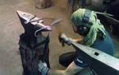

The motivation for my work is multifaceted. At the very core it comes from an ambition to explore materials and expressions, which fuels a will to invent and improve things, something that has been with me since I was a child. One expression of this occurred at kinder-garden where I mended broken things and explored new ways to make them work. Even as an engineer I have always wanted to improve things I have seen, whether they be advanced technical systems or more fundamental products. I believe that for every problem there is always a solution, even though it may not always be what we have expected, and for every solution, there is always a better one you have yet to discover.
I have during the last years undertaken the artistic education in form, design and metal crafting at Steneby. This has in many ways been a very rewarding time. Foremost because I've been forced to struggle a lot with the creative process which now without a doubt has made me a different person, viewing the world in a different way. This ranges from appreciating the molecular networks of leaves to the unbiased exploratory sketching process exploring designs expressing a certain concept or emotion. For me this confirmed thoughts I've had for many years; that there is much more than the relatively strict and straightforward way of working which exists in the world of engineering. Even though this artistic way of working very often entails deeper struggles -and of a different kind- it simply is more interesting and rewarding on both the emotionational as well as the professional level.
My academical background -apart from Steneby- is a master's degree in computer science with major in artificial intelligence and agent-based systems undertaken at Stockholm University, KTH and SICS. This is also primarily what I've been working with, applied to telecommunications, biotechnology, e-commerce, and aeronautics systems. As a system developer and architect I have worked within the design process in many different forms. The will to increase this understanding from a different perspective thus comes naturally to me.
The steadfast dedication to science and technology has merged together with the fascinating world of arts and craft. Even though the future is unknown, when inherently valuable components meet, it often naturally results in emergent phenomena. The ambition rests in combining the knowledge and experience as an engineer with the creative process and material exploration of the artist.